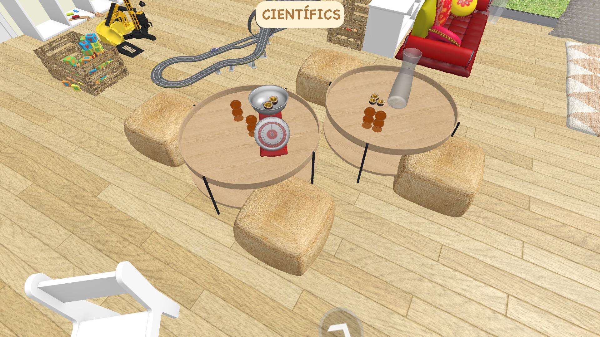
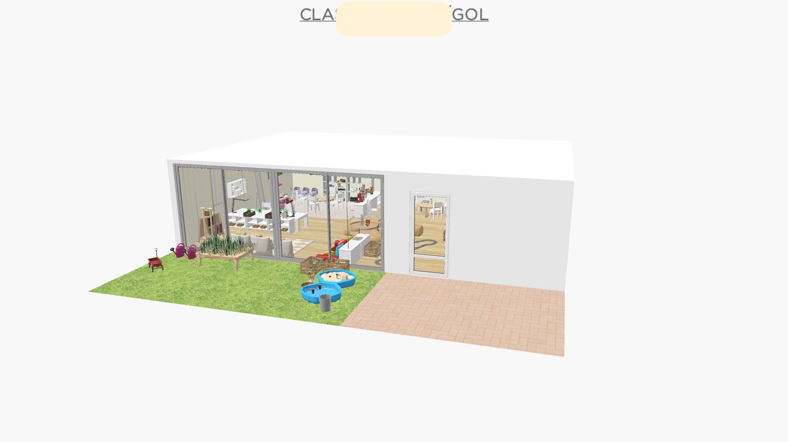
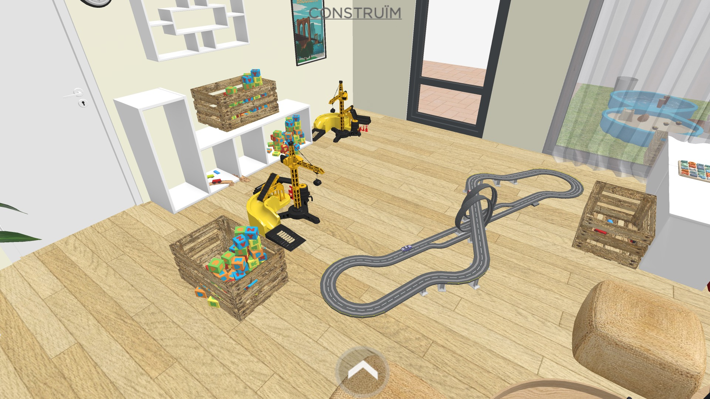
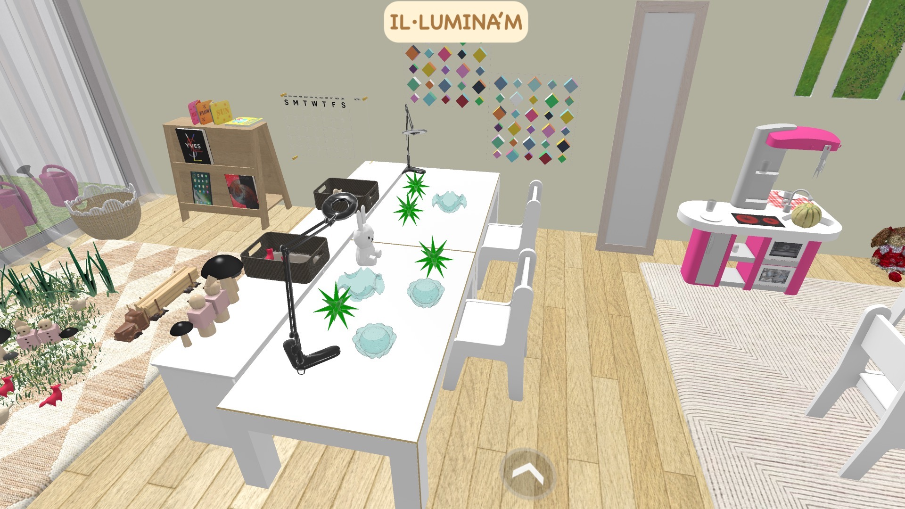
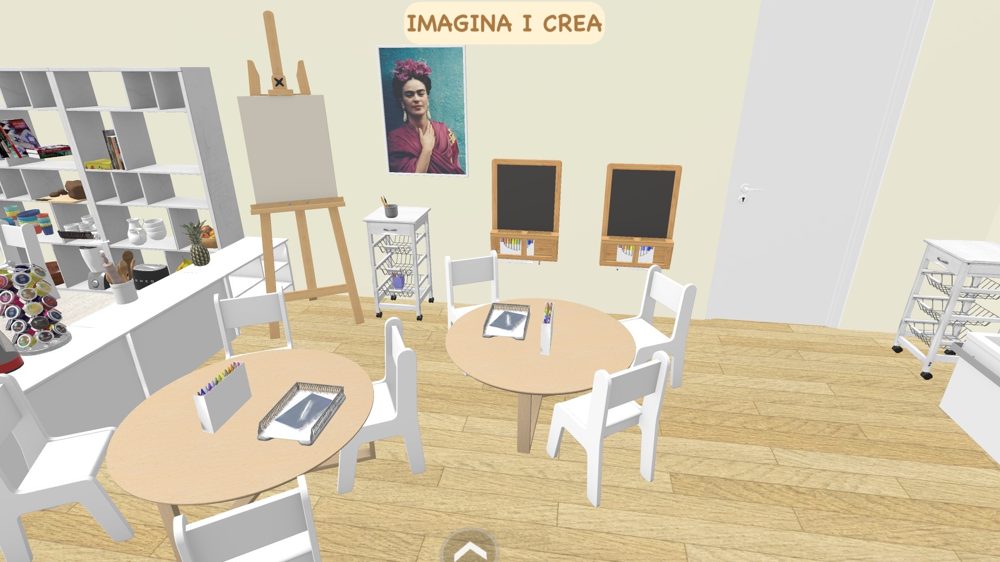
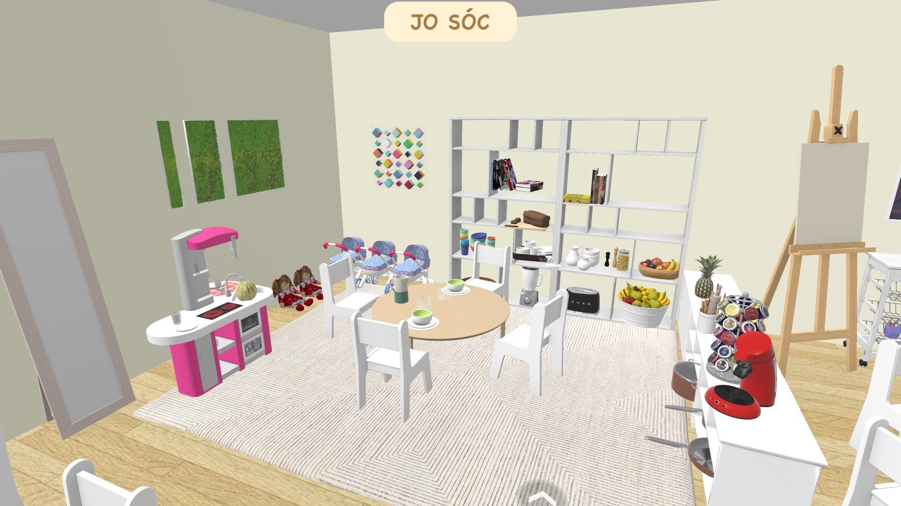
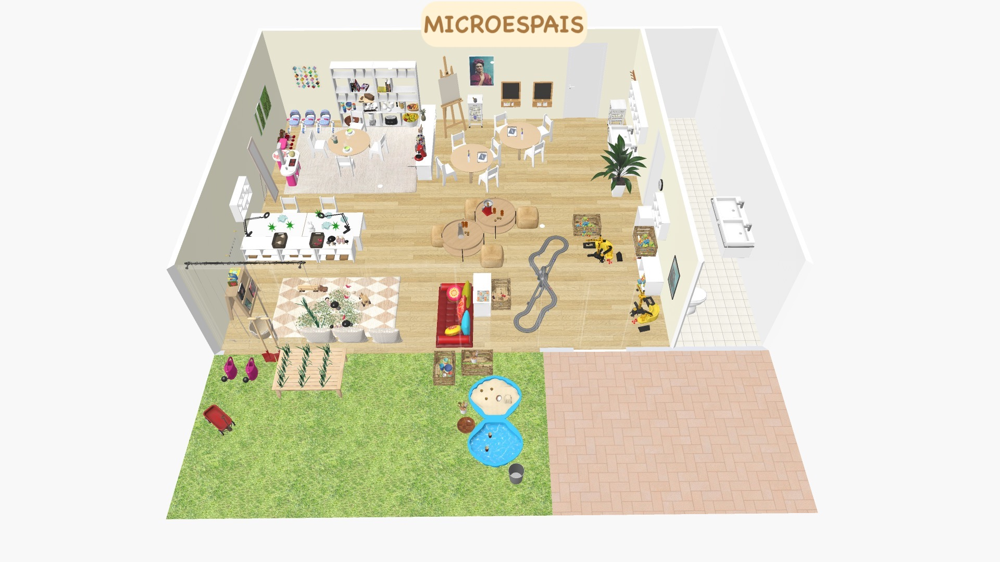
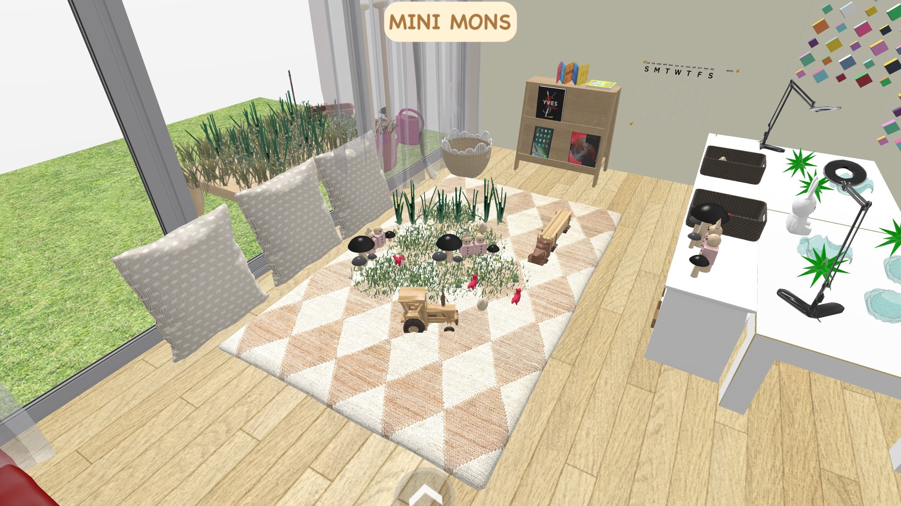
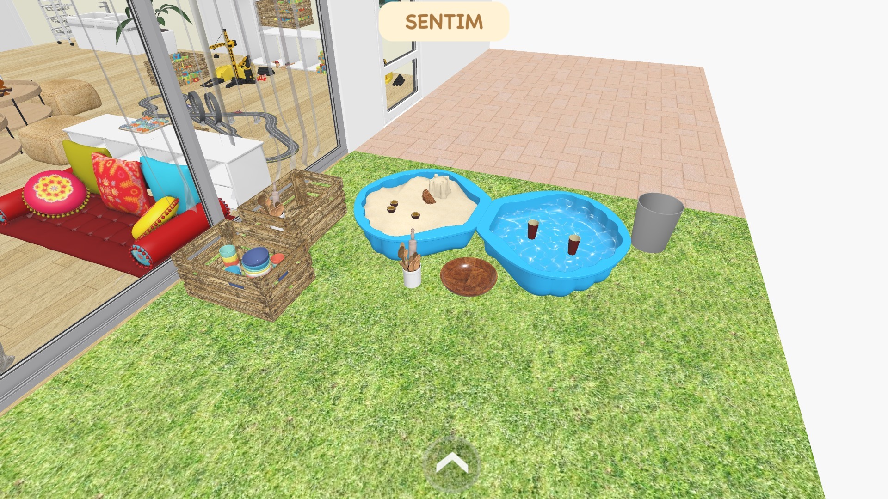

Els microespais ofereixen una organització de l'espai on l'infant és
constructor del seu aprenentatge, a través de l'experimentació, la
descoberta, la investigacio i el joc, de forma autônoma i en relació amb
els companys. És l'infant el que busca les estratègies i pren les
decisions per a resoldre les situacions que se li plantegen.









MINIMONS.jpg
La importància d'emocionar a l'infant amb les propostes és vital per tal
que es produeixi l'aprenentatge, com diu Francisco Mora, "sense emoció
no hi ha curiositat, no hi ha atenció, no hi ha memòria, no hi ha
aprenentatge".